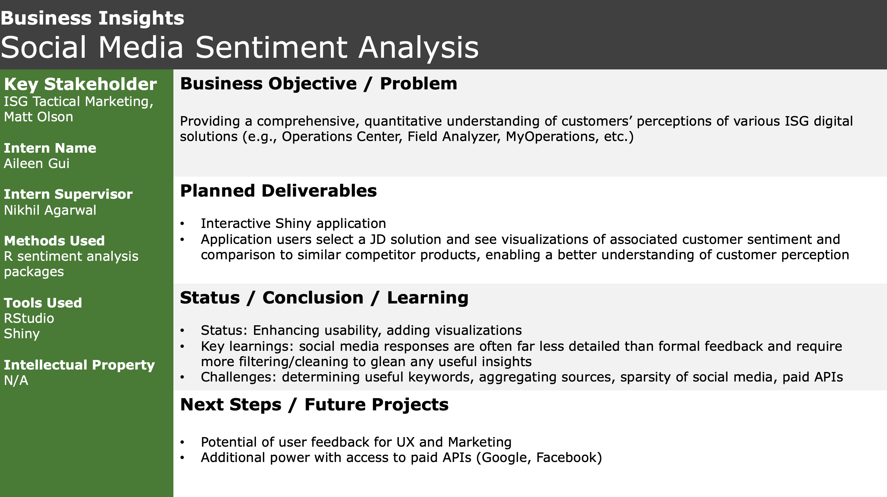
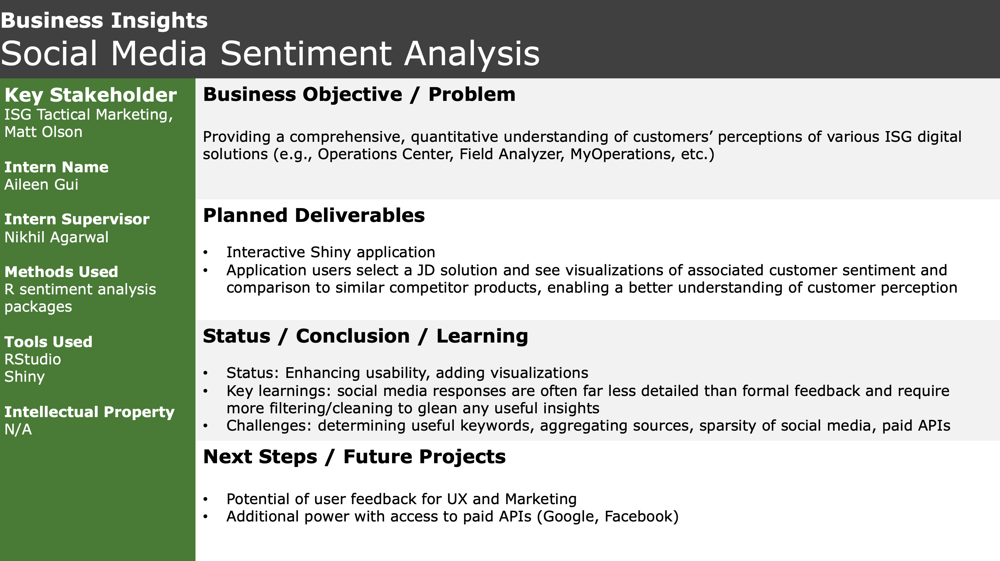
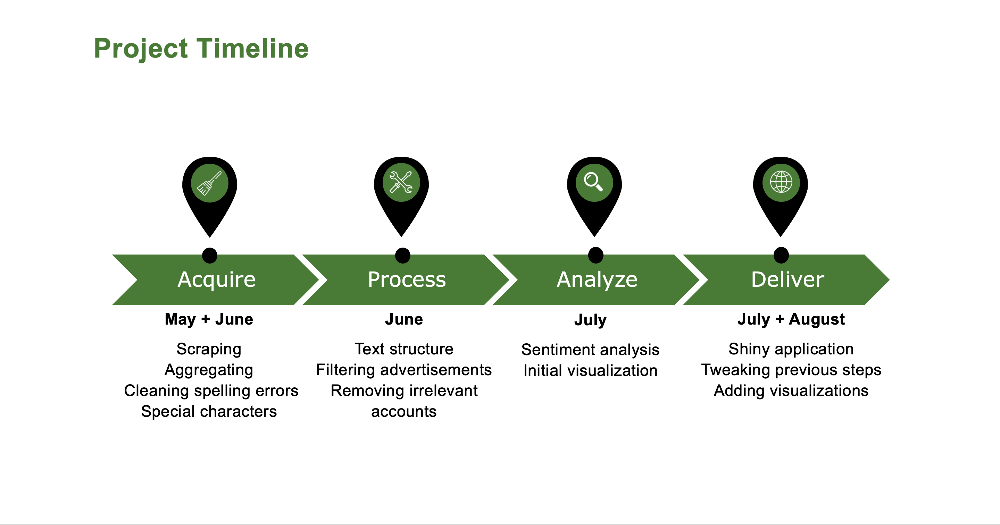
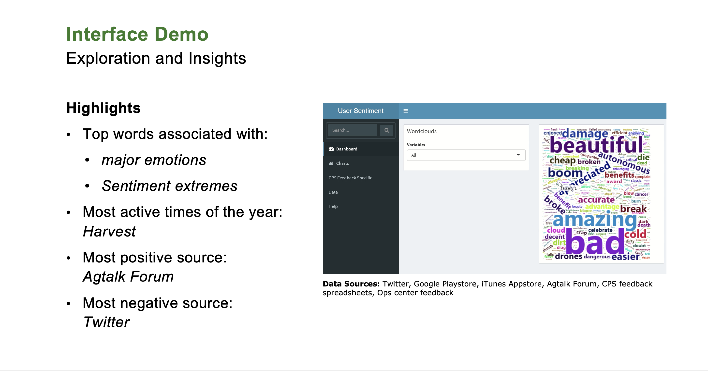
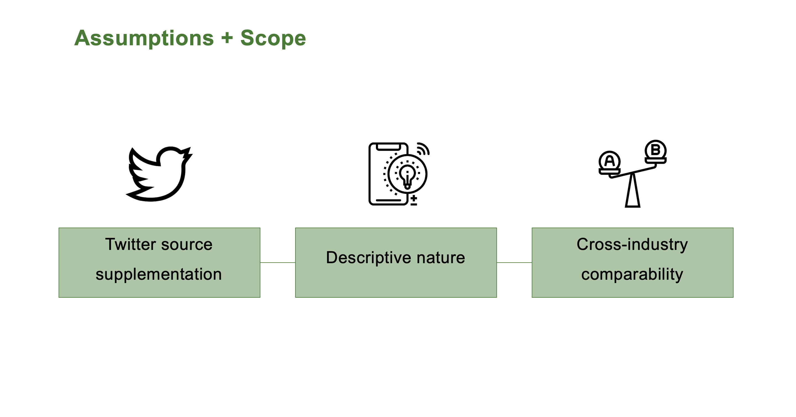
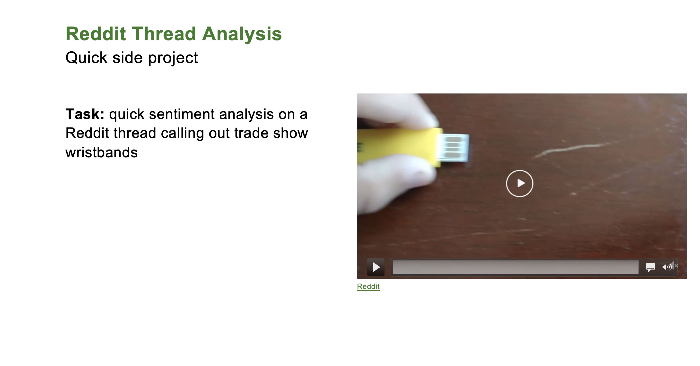
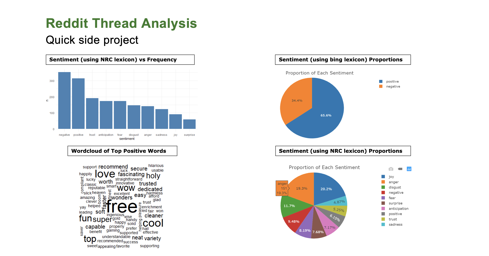

Data Science Intern @ John Deere Labs, SF 2019
 

I worked on the Business Insights team within ISG Data Analytics and my manager was Nikhil Agarwal, a data scientist, spending the summer focused on social media sentiment analysis.
Sentiment in this context is: also known as opinion mining and is a field within Natural Language Processing that builds systems that try to identify and extract opinions within text. I’ve used methods which express polarity and detect emotion. The overarching purpose with this project is providing another source of insights to help answer questions about customer perception on Deere solutions.
Currently, customer sentiment is gauged per team (whether that be enterprise, CPS, UX, marketing) mostly through in-app feedback form submissions or interviews with LUG’s (lead user groups). Social media’s usage at Deere has traditionally belonged to PR groups.
This project attempts to bring the two together. This sentiment analysis project aims to provide a comprehensive, quantitative understanding of customers’ perceptions of various ISG digital solutions, and what people are saying about comparable products in other industries. This project is mainly a proof of concept, and is meant to explore what we could gain from understanding wider public perception.
My deliverable was to create an interactive web application that would allow groups interested in customer insights to understand what’s being said online. Future potential users might be for example: product managers, user experience researchers, product marketing analysts. The biggest challenge has been in identifying what types of insights would be the most useful, and direct the features of my application to cater to that.
This video was a demo of what the application looked like with the Dashboard homepage being large summary type plots. Looking at the actual product, it’s really just a delivery tool for all the plots I generated beforehand. This is the interactive portion potential users can interact with.
Here is the general process and timeline of how I planned out my project. I’ve broken it down into 4 phases, the first being acquisition of data which took roughly 2 weeks. The next phase was processing that data by cleaning spelling mistakes, filtering advertisements, and more. That took the whole month of June. Additionally, as I saw holes in the data I would go back to the acquisition step and fill in those gaps.
The analysis phase took roughly 3 weeks in July and was about manipulating the data I’d gathered to do some basic sentiment analysis. Playing around with what I got to see what I could answer. The last portion is the delivery portion, which is taking the last couple weeks of June and into August, until the end of my internship on August 16.
With that being said, at every step there was always room and time allotted to go back to a previous step and make adjustments as needed. Almost 80% of my time was spent on the acquisition and processing portion of this project. Analysis was relatively quick, with many types of plots being very well documented in R it’s easy to find references for what I want to do.
As you probably noted before, I had more sources than just social media data. One assumption I had was that Supplementing Twitter data with other sources wouldn’t substantially skew results, so I added internal CPS (Customer Product Support) data which is full of essentially all the information I wanted from every other source but had been gathered through different methods than public comments. There would be no predictive element to the dashboard (mainly descriptive). The last assumption was that there's no perfect 1-1 comparison between Deere solutions/applications and another industry or company’s “version” but they can be bucketed into the same general categories.

Challenges in the first half with acquisition and processing included data sparsity I mentioned earlier, API limits, and combining relevant data sources.From this, the key takeaway is that social media data is messy, a keyword extraction feature would be helpful for the future.

Challenges I encountered included a Shiny application learning curve and time consuming data manipulation. I learned through these 2 phases that it pays off to make scripts as clean as possible for the future, and think about ways to make this application live beyond the time I work on it.
On the side, I was able to do some quick sentiment analysis of an interesting reddit thread, whose video you see playing here. My manager sent me an opinion thread from Reddit on the wristbands that Deere hands out at tradeshows. Here, a user is outraged that you plug in the wristband to your computer, and it automatically pulls up the Deere webpage. This took a couple hours and was a fun side exploration from the other sentiment analysis I’d been doing.
Here are some of the plots I generated. Going clockwise from the top left, you can see top emotions associated with the thread. The pie chart next to that uses a specific lexicon that categorizes the comments as positive or negative. The next pie chart breaks down sentiment proportions from a different lexicon. And the wordcloud represents the top positive words in that thread.